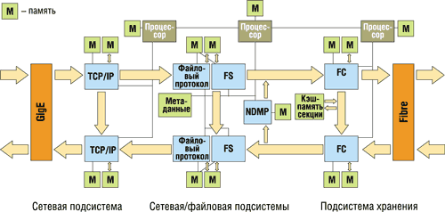

Анатолий Журкин
Появление новых и развитие имеющихся приложений вызывает постоянный рост потребности в ресурсах хранения. Так, электронная почта и ее архивы в большинстве корпораций требуют от систем хранения все большей емкости. Домашние каталоги пользователей и файлы с корпоративными данными разрастаются по мере добавления графического контента. Системам автоматизированного проектирования требуются высокопроизводительные системы хранения большой емкости для детализации проектируемых изделий. Другие сферы деятельности, связанные с техническими вычислениями, например, разработка ПО, картография и обработка изображений, разведка нефти и газа и новые области научных исследований, во много раз повышают потребность в онлайновом и архивном хранении.
Многим приложениям нужно дисковое пространство для хранения цифровых видео- и аудиозаписей. В подобных приложениях для визуализации, редактирования и анимации высокого разрешения требуются терабайты хранения. Допечатная подготовка и рост числа онлайновых архивов вызывают рост потребностей в хранении для издательского дела и приложений мультимедийных новостей.
Информация становится одним из самых ценных ресурсов любой компании. Тенденция роста ее важности проявляется в количестве данных, которые нужно хранить по мере того, как компании организуют хранилища своих интеллектуальных активов. Отсюда становится ясно, что потребность в сетевых системах хранения с высокой масштабируемостью и доступностью увеличивается по мере расширения объемов хранилищ данных. Сегодня круглосуточный доступ - это минимальное требование к централизованной системе хранения информации.
Рост объемов хранения вызывает и проблемы с производительностью и управляемостью систем хранения. Во многих организациях резко увеличивается и число файлов, из-за чего возникают проблемы с управлением данными. Поскольку прогнозируется, что емкость систем хранения в течение жизненного цикла будет расти экспоненциально (рис. 1), ИТ-менеджеры должны оценить сетевое оборудование, ПО и серверы с точки зрения их масштабируемости. Считается, что в идеале пропускная полоса ввода-вывода и производительность сервера должны масштабироваться при увеличении емкости дисков. Однако на практике обычные серверы сегодня не обладают такой масштабируемостью, так что приходится устанавливать дополнительные серверы, а это ведет к усложнению управления ими. До сих пор эта задача практически не имела другого решения, кроме развертывания большего числа серверов.
| Рис. 1. Прогноз увеличения емкости систем хранения.
|
Ограничения традиционных серверов
При традиционной модели использования компьютеров на предприятии хранимые данные распределяются по разным платформам, которые могут иметь место в корпоративной сети. Обязательным условием остается надежный доступ к хранимым данным. Тем не менее из-за быстрого роста потребностей в ресурсах хранения типичная распределенная модель не обеспечивает необходимой производительности, надежности и управляемости. Многие эксперты полагают, что архитектура традиционных серверов не соответствует современным тенденциям роста трафика и сетей (рис. 2).
| Рис. 2. Узкие места в традиционной серверной архитектуре.
|
Хотя тактовые частоты процессоров выросли во много раз, сервер часто просто не способен обеспечить необходимое увеличение общей производительности системы. Самое простое и распространенное решение в таком случае - установить дополнительные серверы. В результате приходится увеличивать число серверов только для того, чтобы справиться с возросшим сетевым трафиком. В долговременной перспективе такое решение не обеспечивает масштабируемости, а затраты на приобретение и обслуживание при таком расширении возрастают до неприемлемого уровня. Для приложений с интенсивными вычислениями сервер становится узким местом, замедляющим бизнес-процессы.
Даже самые лучшие серверы построены по фон-неймановской архитектуре, разработанной более 50 лет назад. Хотя эта архитектура хорошо подходит для вычислительных процессов (математических вычислений, выполнения обычных приложений и т. п.), в случае высокоскоростной передачи данных появляются серьезные ограничения.
Задержки сетевой обработки
В традиционной архитектуре серверов используются несколько уровней обработки при обслуживании запросов на доступ к файлам в сервере. На сетевом уровне обрабатывается каждый пакет данных в сети. Далее происходит обработка CIFS, NFS, серверных протоколов для каждого сообщения, обработка файловой системы для каждого запроса доступа. Свою роль играет и ПО драйвера запоминающего устройства.
Эти процессы выполняются последовательно, и каждый из них вводит дополнительное запаздывание на программном уровне.
Пропускная способность ввода-вывода
Узкое место при вводе-выводе связано с тем, что для этих операций используется общая шина, которая служит посредником при доступе к периферийным картам ввода-вывода. В текущей архитектуре аппаратных платформ (как Intel, так и Unix) шина PCI должна передавать данные к картам ввода-вывода в системе и от них и остается узким местом, несмотря на 64-разрядность и тактовую частоту 66 МГц.
Узкое место оперативной памяти
При переходе к интерфейсу PCI-X ограничения перемещаются на новый уровень. В традиционной серверной архитектуре задержка из-за обращения к оперативной памяти была основным узким местом при высокоскоростной передаче данных. Это связано с тем, что оперативная память функционирует как мост для любой передачи данных внутри сервера. Пока оперативная память используется для сетевого ввода-вывода данных (с помощью технологии Direct Memory Access), центральный процессор приостанавливает свою активность, поскольку временно теряет доступ к памяти. Операции ввода-вывода для периферийных устройств также используют обращение к основной памяти для передачи данных в архитектуре сервера. Но в каждый момент времени может обслуживаться только один запрос к оперативной памяти, что неизбежно ограничивает производительность архитектуры независимо от того, насколько возрастает мощность процессора или периферии.
Очевидно, что для достижения необходимой масштабируемости нужно отказаться от традиционной архитектуры. Серверы должны проделать ту же эволюцию, что и сетевые коммутаторы и маршрутизаторы. Напомним, что в начале 1990-х годов производителям сетевых коммутаторов и маршрутизаторов стало ясно, что архитектура на базе центрального процессора накладывает серьезные ограничения на производительность сети. К середине 1990-х годов модель устройств на базе центрального процессора была заменена аппаратной архитектурой устройств ASIC (специализированных интегральных микросхем). В модели ASIC реальная коммутация в сетевом коммутаторе и маршрутизаторе при высокоскоростной передаче осуществляется без участия ПО. Теперь коммутация обычно выполняется на аппаратном уровне несколькими устройствами ASIC, а ПО обеспечивает функции управления более высокого уровня, и за счет этого применение аппаратных ASIC позволяет быстрее перемещать данные.
Пожалуй, ясно, что для решения проблемы недостаточной производительности серверов их технология должна развиваться в том же направлении, что и сетевая. Современная технология NAS - это часть эволюции в направлении высокопроизводительного доступа к системам хранения данных, но для перехода к следующему этапу серверной технологии требуется реализация функций на аппаратном уровне.
Особенности новой архитектуры
Для разрешения узких мест производительности и надежности традиционных серверов компания BlueArc (http://www.bluearc.com) заново разработала архитектуру сервера и системы хранения. Новый продукт SiliconServer Storage представляет собой подключаемую к сети напрямую систему хранения NAS, основанную на архитектуре SiliconServer (рис. 3), в которой перемещения данных и манипуляции ими выполняются на аппаратном уровне. Новая архитектура обеспечивает гигабитную скорость передачи по кабелю между локальной сетью и высокопроизводительными дисковыми RAID-массивами с интерфейсом Fibre Channel. Эта архитектура реализует масштабируемую и эффективную по стоимости высокопроизводительную платформу хранения и для серверов (Unix, Windows), и для клиентов Интернета.
|  |
| Рис. 3. Архитектура SiliconServer.
|
Первой практической реализацией SiliconServer стал накопитель Si7500. В декабре 2002 г. появилась версия системы Si8000. В ней поддерживается иерархическая система виртуальных томов, управляемая средствами единого интерфейса. Общее количество виртуальных томов на физическом томе ограничено показателем 2032. При работе с двунаправленным каналом Gigabit Ethernet скорость обмена составляет 2 Гбит/с.
Сегодня семейство Si8000 состоит из трех моделей (рис. 4): Si8300 имеет максимальную емкость 7 Тбайт, Si8700 - 98 Тбайт, а Titan - 256 Тбайт. Устройства могут использовать диски с интерфейсом Fibre Channel. Среди дополнительных свойств Si8000 стоит отметить ускоренное создание копий с тома на том - Accelerated Data Copy. Для выполнения этой процедуры добавлено управляющее устройство на стандартном ультратонком сервере форм-фактора 1U, который используется еще и для антивирусной проверки данных.
 |
Рис. 4. Семейство систем BlueArc SiliconServer 8000.
|
По информации разработчиков, в их системах обеспечивается производительность в установившемся режиме на несколько порядков выше, чем у обычных решений, поэтому один SiliconServer может обрабатывать нагрузку десяти традиционных серверов класса high-end. Продукты интегрируются напрямую в существующие сети как стандартный сервер Windows NT или Unix. Кроме того, два сервера можно объединить в кластер для создания полностью резервированного канала передачи данных от сети до дисковых RAID-массивов. В такой конфигурации SiliconServer Storage стандартно обеспечивает уровень доступности более 99,999%. Увеличенная производительность, надежность и масштабируемость SiliconServer Storage означает повышение качества обслуживания и более выгодное соотношение цена/производительность.
Как уже отмечалось, SiliconServer реализует функции файл-сервера на аппаратном уровне, снимая таким образом фундаментальные ограничения традиционных серверных решений. Технология SiliconServer использует большое число конечных автоматов для обеспечения той же самой функциональности, которую ОС реализует в обычном файл-сервере, но при более высокой производительности и надежности. Хотя архитектура SiliconServer сильно отличается от обычных серверов, она использует стандартные протоколы для связи с клиентскими компьютерами.
Для создания масштабируемой платформы сервер построен из нескольких отдельных секций, или подсистем. Первая подсистема - это сервер, реализующий функциональность протокола TCP/IP. Вторая подсистема обеспечивает поддержку различных файловых систем, включая NFS, CIFS, HTTP, FTP и NDMP, третья реализует саму файловую систему и последняя - кэширование и управление для подключенных систем хранения.
Каждая из подсистем подключена к соседним через две высокоскоростные шины, работающие только в одном направлении (см. рис. 3). Комбинация этих шин образует два отдельных канала передачи данных, не создающих взаимных задержек, и таким образом SiliconServer может использовать все преимущества дуплексного режима тех сетей, к которому он подключен. Данные могут одновременно приниматься и посылаться со скоростью 1 Гбит/с, что обеспечивает максимальную скорость передачи 2 Гбит/с. Дополнительные шины позволяют передавать данные между элементами аппаратной обработки в той же подсистеме, поэтому, например, соединение TCP/IP может быть организовано локально без какого-либо влияния на другие подсистемы SiliconServer.
Аппаратные конечные автоматы в архитектуре SiliconServer выполняют обработку данных, что помогает реализовать различные протоколы, необходимые для обслуживания файлов. Каждый из этих элементов представляет собой набор из двух микросхем программируемых логических матриц FPGA. Во время загрузки системы микросхемы программируются с помощью файла списка соединений (где указано, как должны быть соединены транзисторы микросхемы), и создаются конечные автоматы, позволяющие им выполнять свои функции. Все это делается достаточно быстро - на подготовку к работе всего SiliconServer уходит примерно 60 с, после чего эти микросхемы готовы обрабатывать запросы клиентов к данным.
Для управления процессами, выполняемыми на аппаратном уровне, в архитектуре SiliconServer используется встроенная ОС BlueArc OS. Она работает параллельно на трех разных процессорах, каждый из которых имеет отдельные соединения для связи с другими процессорами без нарушения потоков данных внутри системы.
Еще одно принципиальное отличие архитектуры SiliconServer от традиционной архитектуры серверов состоит в распределении оперативной памяти (вместо единого пула), как в сетевом коммутаторе. Память буфера в каждой секции системы отделена от управляющей памяти. Память для приема данных отделена от памяти для передачи данных, когда это имеет смысл. Каждый процессор работает с собственным выделенным пулом памяти, что устраняет задержку, обычную для серверов архитектуры SMP (Symmetric Multi Processor).
Подсистема TCP/IP
Первая подсистема архитектуры SiliconServer реализует на аппаратном уровне функциональность TCP/IP. В SiliconServer все стандартные функции TCP/IP выполняются на логике конечных автоматов, за исключением нескольких функций, которые обеспечивает ПО на подключенном к системе процессоре (например, трафик ICMP, восстановление фрагментированного трафика). Процессор также обрабатывает любое необходимое восстановление после сбоев. Система способна обеспечить полнодуплексную производительность среды передачи данных для соединения Gigabit Ethernet.
Сетевая файловая система/файловая подсистема
Файловая система получает запросы файлов (например, "извлечь свойства файла README.TXT") и преобразует их в серию команд SCSI для доступа к диску (например, извлечь блоки 100-120 с диска 2). Данные, полученные в результате выполнения команды SCSI, затем передаются обратно на файловый уровень для запросившего их клиента ("файл README.TXT имеет статус только для чтения").
Из-за своей сложности аппаратная реализация всей файловой системы первоначально не включалась в число задач, решаемых SiliconServer, но все функции передачи данных выполнялись аппаратурой, включая чтение и запись данных файлов клиентами, перемещение данных от диска на ленту при резервном копировании и т. п. Это позволило построить файловую подсистему, обеспечивающую гигабитные скорости чтения и записи файлов.
Учитывая, что часть файловой системы реализуется программно, крайне важно обеспечить такое же масштабирование программных компонентов, как и аппаратных. В системном ПО BlueArc применяются два важных усовершенствования производительности и масштабируемости.
Прежде всего файловая система BlueArc поддерживает размеры томов от текущих 1,75 Тбайт до 16 Тбайт и выше. Кроме того, архитектура обеспечивает улучшение производительности хранения при расширении объема тома, выгодно отличаясь в этом от обычных RAID-массивов, в которых при больших размерах тома возникают ограничения производительности. К тому же во многих системах NAS и традиционных серверах размер тома не может превышать 1,5 Тбайт.
Во-вторых, ПО позволяет организовать доступ к большим объемам метаданных без замедления операций, для чего система BlueArc использует модифицированную систему дерева B+ (под названием Nary) вместо традиционной системы на основе индексных дескрипторов файлов (inode). Файлы и каталоги, добавляемые в файловую систему BlueArc, связываются между собой в таблице метаданных, имеющей древовидную структуру. При поиске по дереву на каждом узле метаданных определяется, находятся ли ниже него требуемые данные. Благодаря этому скорость доступа к метаданным существенно увеличивается по сравнению с тем подходом, когда используется таблица линейных дескрипторов.
По своему устройству эти подсистемы похожи на подсистему TCP/IP, с тем отличием, что кристаллы FPGA программируются для выполнения функций файловой системы. Все операции с метаданными (создание, удаление, переименование файлов и т. п.) выполняются на уровне ПО, но чтение и запись данных реализованы аппаратно.
Для улучшения производительности файловой системы подсистема поддерживает кэш-память метаданных объемом 2 Гбайт. Изменения в этой кэш-памяти полностью фиксируются в журнале, хранящемся на диске, поэтому в случае сбоя файловую систему всегда можно вернуть в корректное состояние.
Помимо улучшения производительности при обычных операциях с файлами, перемещение данных на аппаратном уровне играет значительную роль в операциях резервного копирования. При резервном копировании файлов, хранящихся на обычном сервере, данные читаются с его дисков и затем записываются на ленту. Этот процесс выполняется на программном уровне, что сильно загружает процессоры сервера, так что последний не может выполнять другие операции с файлами.
Для решения этой проблемы в архитектуре SiliconServer предусмотрена отдельная машина состояний для перемещения данных при резервном копировании и восстановлении. Эта микросхема (NDMP) отрабатывает все перемещения данных во время таких операций и позволяет при резервном копировании не прерывать обычные процессы файловой системы. Она также улучшает скорость резервного копирования с использованием стандартных приложений, поддерживающих NDMP, например, программных пакетов Commvault Galaxy, Veritas NetBackup, Bakbone, Syncsort и Atempo Time Navigator.
Реализация NDMP от BlueArc поддерживает функцию DAR (Direct Access Recovery), способную значительно сократить время восстановления отдельных файлов. Благодаря DAR возможна непосредственная перемотка ленты к тому месту, где находятся восстанавливаемые данные, так что ПО резервного копирования не требуется читать весь образ содержимого ленты, если восстанавливается только часть данных. Процесс аппаратного копирования NDMP также используется при выполнении процесса SiliconServer Accelerated Data Copy по протоколу Fibre Channel или IP.
Подсистема хранения
Подсистема хранения SiliconServer получает команды SCSI от файловой системы и выполняет доступ на уровне блоков к дискам, подключенным к серверу. Для улучшения производительности подсистема хранения использует кэш-память блоков объемом 2 Гбайт, где передаваемые на диски блоки объединяются для оптимизации перемещений головок дисков при записи.
Системы SiliconServer Storage поддерживают с подсистемой хранения полнодуплексные соединения Fibre Channel 1 Гбит/с. В моделях старшего класса обеспечивается доступ с помощью Fibre Channel 2 Гбит/с.
Управление системой и данными
В SiliconServer Storage обеспечивается защищенный Web-интерфейс, интерфейс командной строки с управлением на основе сценариев и поддержка средств интегрированного управления, использующих SNMP. Все функции конфигурирования и мониторинга предусмотрены для всех указанных интерфейсов в расчете на локальное и удаленное управление. В системе организован мощный мониторинг, автоматические предупреждения передаются системному администратору (по электронной почте, на пейджер, с помощью всплывающих окон, SNMP, световых, звуковых сигналов, мнемологики и т. п.) при обнаружении любых отклонений, что позволяет заблаговременно устранять потенциальные проблемы.
"Мгновенные снимки" (Snapshot). В SiliconServer серий Si7500 и 8000 имеется функция "мгновенных снимков" файловой системы, которая используется для резервного копирования и/или восстановления случайно удаленных файлов. Пользователи могут увидеть каталог snapshot в корне тома и скопировать исходный файл, который в результате ошибки был удален или изменен в работающей файловой системе. В каталоге snapshot выводится серия "мгновенных снимков", отображаемых как подкаталоги, название которых указывает на дату, когда они были сделаны. Пользователь может выбрать "снимок" для нужного ему момента времени.
Систему SiliconServer можно сконфигурировать так, чтобы автоматически получать "мгновенные снимки" при резервном копировании по расписанию. В этом случае будет копироваться образ данных файловой системы в определенный момент времени. Как отмечалось выше, операции резервного копирования не влияют на обычные процессы файловой системы, и последние продолжаются в обычном режиме. Система "мгновенных снимков" BlueArc основана на правилах, что обеспечивает оптимальное управление и получение практически неограниченного числа "снимков".
Виртуальные тома. В SiliconServer Storage реализованы широкие возможности управления данными, которые позволяют системному администратору задать логическое объединение в виртуальный том нескольких каталогов томов. Виртуальные тома могут использоваться для настройки контейнеров пространства проектов, групп пользователей и отдельных пользователей, для которых применяются сервисы управления данными.
BlueArc поддерживает "жесткие" и "мягкие" квоты виртуальных томов с выдачей предупреждений о приближении к пороговому значению и его превышении. Это позволяет администраторам точно управлять пространством данных и реагировать на то, как используется пространство проектом или отдельным пользователем. Администраторы могут динамически расширять пространство виртуальных томов или управлять его распределением по мере необходимости.
Сервисы System Management Unit. Опционально управление системой SiliconServer Storage может быть усовершенствовано с помощью модуля System Management Unit (SMU), работающего под управлением Linux, который устанавливается в системной стойке. Основанная на стандартах платформа SMU - это быстро разворачиваемое решение BlueArc для реализации дополнительных функций управления. Сейчас SMU поддерживает антивирусное сканирование, ускоряет копирование данных внутри и между серверами BlueArc, управление безопасным доступом SSH и использование сценариев. SMU также запускает программы мастера настройки, упрощающие установку и конфигурирование систем SiliconServer Storage.
Применение SiliconServer Storage
Высокая производительность и доступность систем SiliconServer Storage могут быть полезны в целом ряде приложений. Известно, что управление большой и расширяющейся группой серверов часто превращается в непростую задачу. Вместо того, чтобы приобретать дополнительные серверы для расширения сервисов и увеличения мощности, можно использовать для консолидации серверов систему SiliconServer Storage, которая будет работать вместе с существующими серверами. Эта система способна сократить квартальные текущие расходы на хранение до 80% за счет более эффективного управления данными, сокращения площади, занимаемой аппаратурой в центре обработки данных, и снижения эксплуатационных расходов.
SiliconServer также улучшает эффективность и производительность резервного копирования - эти показатели часто становятся критически важными при увеличении объемов данных и сокращении "окна" резервного копирования, с чем сталкиваются сегодня многие предприятия.
Использование SiliconServer может значительно ускорить выполнение проектов. Высокопроизводительная система обеспечивает более быстрый доступ и повышает продуктивность. Кроме того, производительность в установившемся режиме при пиковых нагрузках означает, что ускоряется доступ к файлам любых пользователей, которые регистрируются в системе в начале рабочего дня и закрывают сеанс работы вечером. Поддержка совместного использования файлов в Unix и Windows и большая емкость для хранения общего файла означают, что не возникнет проблем с несколькими копиями файлов и контролем их версий. Все эти усовершенствования также сокращают операционные расходы, а высокая доступность и целостность данных улучшаются благодаря хранению ценных данных проектирования, экспериментов и проектов.
Система SiliconServer Storage может также использоваться для ускорения и улучшения углубленного анализа, управления данными научных исследований. Повышение производительности сокращает время разработки новых продуктов и выхода их на рынок. Высокая доступность и интегрированность системы хорошо подходят для круглосуточного доступа и хранения ценной информации в цифровой форме.
Скорость передачи данных в телекоммуникационных сетях чуть больше чем за десятилетие выросла с 64 Кбайт/с, достаточных для передачи голоса, до нескольких мегабайт в секунду. Теперь требуется обеспечить доступ к системам хранения со скоростью, которую поддерживает сеть, доступ к данным с помощью протоколов Windows, Unix и Web (HTTP, FTP). Новые системы хранения оптимальны для выполнения этих требований.
Архитектура SiliconServer реализует и другие важные преимущества. Так, система поддерживает до 10 тыс. одновременно работающих пользователей, что обеспечивает сервисы хранения для больших групп пользователей. Емкость хранения может расширяться в онлайновом режиме до десятков и даже сотен терабайт, что облегчает поддержку новых клиентов. Высокая доступность хранения в круглосуточном режиме 24x7 с поддержкой мгновенного переключения на резервные соединения обеспечивает выполнение контрактов на уровень обслуживания.